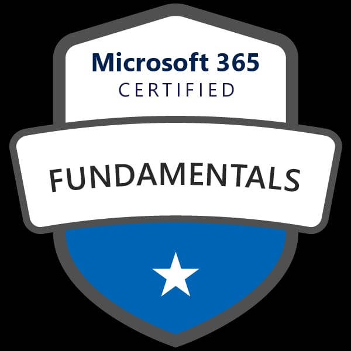
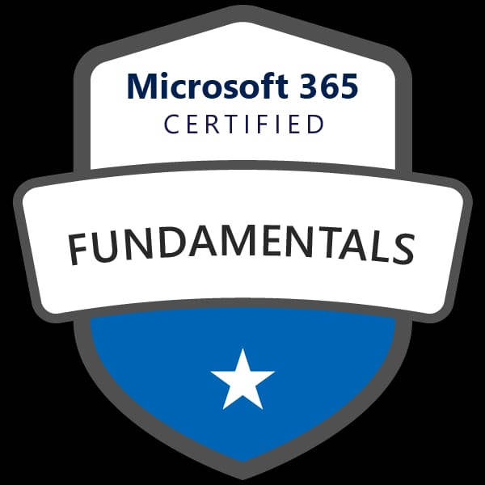

É com grande satisfação que apresentamos nossa empresa MCTEC, temos como objetivo fornecer soluções de tecnologia de alta qualidade para empresas de todos os tamanhos, desde pequenas startups até grandes corporações sempre com o mesmo comprometimento e dedicação. Além disso, atendemos também pessoas físicas que precisam de suporte técnico em seus equipamentos pessoais.
Somos especializados em Consultoria de TI, Cabeamento Estruturado, Segurança da Informação, CFTV, Prestação de Serviços em Tecnologia e Manutenção de Desktop, Notebooks e Servidores, dedicada a oferecer soluções inovadoras e sob medida para ajudar e impulsionar o sucesso do seu negócio.
A MCTEC é uma empresa com mais de 27 anos no setor de tecnologia, com uma trajetória sólida e bem-sucedida no mercado, trilhada pelo César Mendes, CEO da empresa. Com sede nova, na Rua Jaguarari, 1912ª em Natal/RN e uma equipe altamente qualificada de profissionais experientes, estamos prontos para enfrentar os desafios mais complexos e atender às necessidades das empresas e indivíduos, buscando sempre a satisfação e excelência no atendimento.
Nossa equipe é composta por profissionais altamente qualificados e treinados, que estão sempre atualizados nas últimas tendências e novidades do mercado. Possuímos uma estrutura completa e equipamentos de última geração, garantindo qualidade e agilidade nos serviços prestados.
Acreditamos que a tecnologia pode ser uma grande aliada na otimização de processos e aumento de resultados, por isso, buscamos sempre oferecer soluções que agreguem valor aos nossos clientes.
A MCTEC preza pelo atendimento personalizado e eficiente, com foco na solução dos problemas e na satisfação do cliente. Temos como valores a transparência, honestidade, pontualidade, profissionalismo, ética e relacionamento humanizado em todas as relações, sejam elas com clientes, fornecedores ou colaboradores.
Convidamos você a conhecer mais sobre nossos serviços e a se juntar a nossa lista de clientes satisfeitos. Entre em contato conosco e permita-nos ajudar a sua empresa a alcançar novos patamares de sucesso com as soluções em TI da MCTEC.
Se você está procurando uma empresa de Consultoria em TI e Assistência Técnica que possa fornecer soluções personalizadas para suas necessidades de negócios, entre em contato conosco hoje mesmo para saber como a MCTEC pode ajudá-lo.
 
